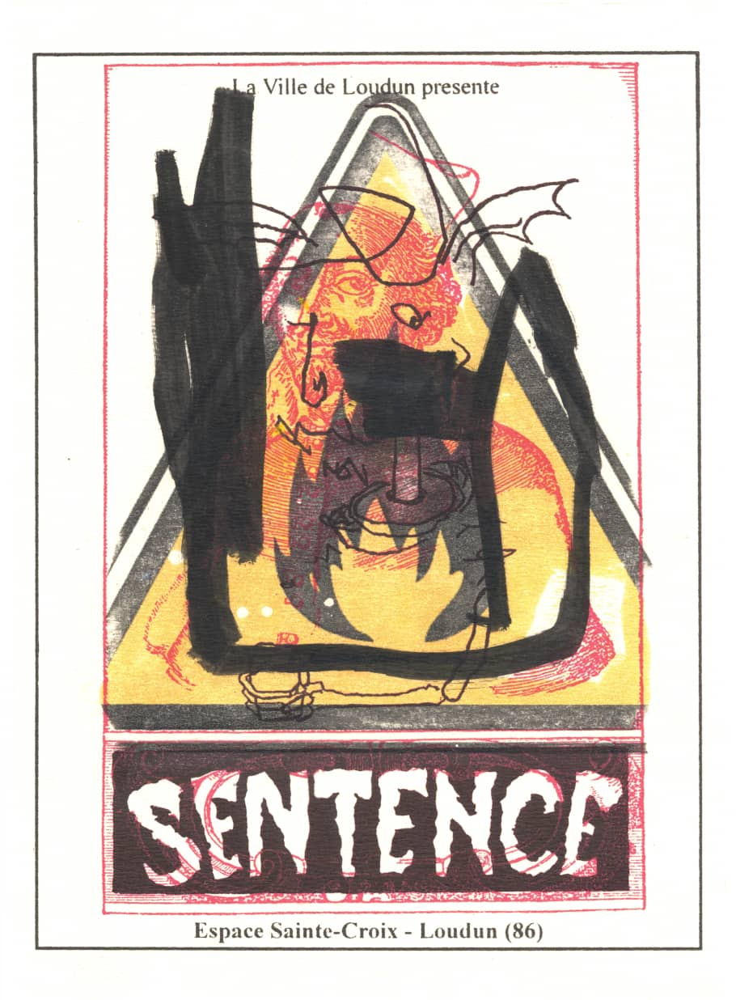
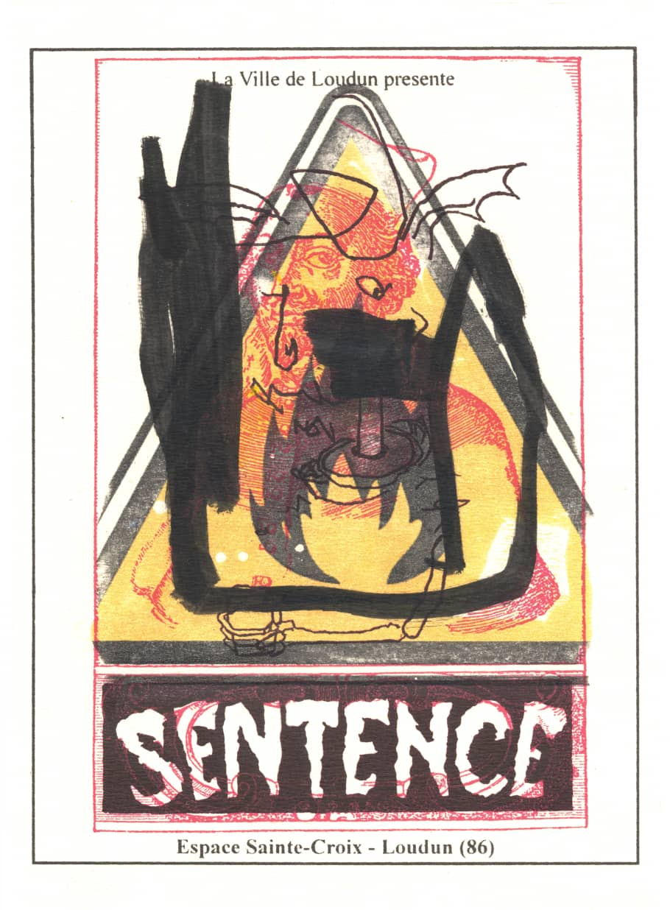
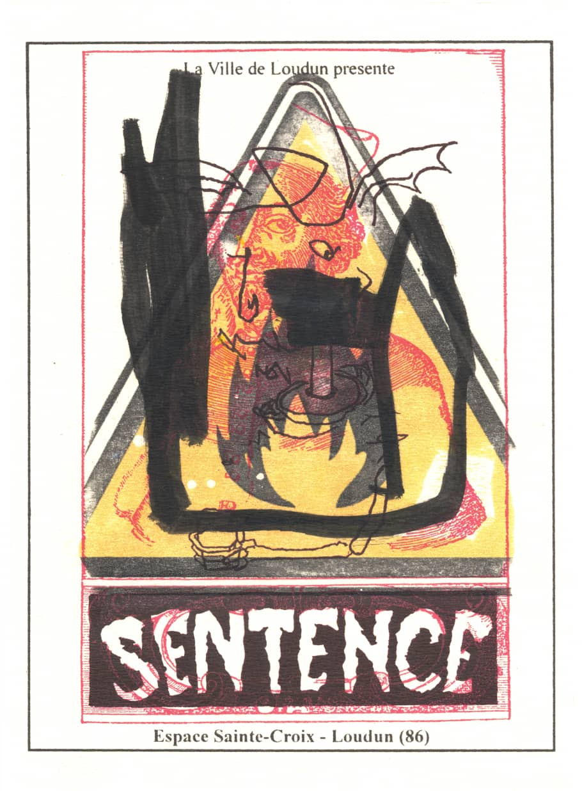

Spring of 2005 marked the discovery of the first foundations of «Manherd» an artistic collaboration concerning the representation of crowds, the idea being to erect what by nature has no face nor pre-defined form. «Manherd» , the generic title, is a word-concept formulated and conceived via a misunderstanding or quiproquo of the word «Mankind». General aesthetics were hinted at as early as 2000 but it was not until five years later that a broader picture and definition of Manherd would come to light and elaborate its true meaning. In 2006 a retrospective in situe exposition by SHVink. titled «Sentence» took place at Loudun,France. The catalyst to formulate and define Manherd began during the preparation phase of the exposition. The project was both inspired by the historical theme «the Devils of Loudun» as well as the village or «theatre» that gave birth to a debate orchestrated by a plethora of erudite publications and the popular press attracting inquisitive minds from all over France and almost the whole of Europe. A particular conceptualisation of crowds, human masses and mass images are drawn out and put into operation. Accumulations of creatures, objects, scenes and micro-events are all representations that come to surface as a hybrid crowd. The «Manherd», heteroclite in its construction and erratical movements may be considered here as an entity whose dislocated body is recomposed in a million different ways. The composition of the work portrays these abstract forms at the heart, allowing empty clearings to suggest multiple and multi dimensional in depth perspectives. This impression is reinforced by the confrontation of representational modes, dimensions are juxtaposed while details are repeated and enlarged. A certain vibration emanates from the contact of the large density in pictural zones contrasted by empty virgin territories within each composition. The visual, musical and bibliographical sources are varied and overflow the field of Art History to be then funneled through forms drawn by hand. The work of SHVink. consists in dissecting a profusion of images that surround us and in canalizing the former, irrigate these into creations mapping out a no-man's land of uncharted territories.
INAUGURAL MANHERD MURAL - 3d wallpaper print (12x5m)

RE-INVITATIONS - Exposition "Sentence", silkcsreen & mixed media on paper (15x20cm)
Loudun : a theatre
As W. Mühlman pointed out, there are «eras that are rich in demons». Such is the case for the period that encompasses the 16th and first half of the 17th centuries. The possession at Loudun (1632-1640) occurs towards the end of a long epidemicc of the plague and coincides with a leap forward in rational thinking with the publication of the Discourse on Method by Descartes (1637). The devil's work, then, has already been refined. This possession is to become a battlefield where all sorts of trends are acted out in lively verbal clashes. It is a case of science vs religion, a great public inquiry into what we can be sure of and what we cannot, and the nature of reason, the supernatural and authority. The debate itself is orchestrated by a spate of erudite publications as well as the popular press. It is a 'theatre' which attracts inquisive minds from all over France and almost the whole of Europe - a circus 'for your satisfaction, Sirs' in the words of numerous minutiae of the time. For almost ten years, Loudon is home to a theatrical spectacle and provides a focus for edification, apologetics, pilgrimages, and religiously devout or philanthropic associations. The diabolical becomes commonplace and, little by little, profitable too. It is reintroduced into the language of a society that it continues to torment. Its role in this scenario abides by the traditional rules of any Commedia dell'arte. Thus, the drama unfolds. Violent to begin with, the devil is gradually civilized. He is argumentative, raises discussion, and in the long run, starts monotonously repeating himself. Horror turns into a spectacle and the spectacle into a sermon. Indeed, people still bawl and cry during the exorcims that are praticed after the 'sorcerer', Urban Grandier, has been executated, but this does not put an end to the teaparty provided for the audience in the packed church.
Michel de Certeau The possession at Loudun, 1970
SOEUR MARIE-JEANNE DES ANGES - mixed media on paper (110x75cm) video
History of tension
From the history of tension let us turn, in conclusion, to the present and the future. It is clear, that the problem of tension will be completely solved only when we have a perfect society-that is to say, never. Meanwhile, it always remains possible to find partial palliatives. Let us consider a few practical steps that it would be fairly easy to take. First of all we might incorporate into our present profoundly unsatisfactory and disappointing system of education a few simple courses in the art of controlling the autonomic nervous system and the subconscious mind. As things now stand,we teach children the principles of good health, good morals, and good thinking, but we do not teach them how to act upon these principles. We urge them to make good resolutions, but we do nothing whatsoever to help them carry these resolutions into practice. A main source of tension is the consciousness of miserably failing to do what we know we ought to do. If every child were given some training in what Hornell Hart has called autoconditioning, we should do more for general decency and good feeling than all the sermons ever preached. The next step to be taken is prophylactic in character. Human beings pine for self-transcendence, and getting drunk on herd poison is one of the most effective methods of taking a holiday from insulated selfhood and the burdens of responsibility. So long as they indulge in crowd-intoxication at football games and carnivals, at revival meetings and the rallies of democratically organized political parties, no harm is done. We must never forget, however, that the spellbinders, the rabble rousers, the potential Hitlers are always with us. We must never forget that it is very easy for such men to turn an innocent orgy into an instrument of destruction, into a savage, mindless force directed toward the overthrow of liberty. To prevent them from exploiting crowd-intoxication for their own sinister purposes we must be on our guard. Wether a world inhabited by potential Hitlers on one hand and potential herd-poison addicts on the other can be made completely safe for rationality and decency seems doubtful, but at least we can try to make it a little safer than it is at present. For example, we can give our children lessons in general semantics. We can tell them about the frightful dangers of intellectual sin. We can make their flesh creep with by reciting to them the disastrous consequences to societies and to individuals of the rabble-rouser's over simplification, overgeneralization, and over-abstraction. We can remind them to live in present time and to think concretely and realistically, in terms of observable fact. We can unveil the absurd and discreditable secrets of propaganda and illustrate our lectures with examples drawn the from history of politics, religion, and the advertising industry. Would such a training be effective? Perhaps-or perhaps not. Herd poison is a powerful intoxicant. Once they get into a crowd, even upright and sensible men are apt to lose their reason and accept all suggestions, however nonsensical or however immoral,that may be given them. All we can hope to accomplish is to make it more difficult for the rabble-rouser to do his nefarious work.


 


{kind=link}
{kind=link}